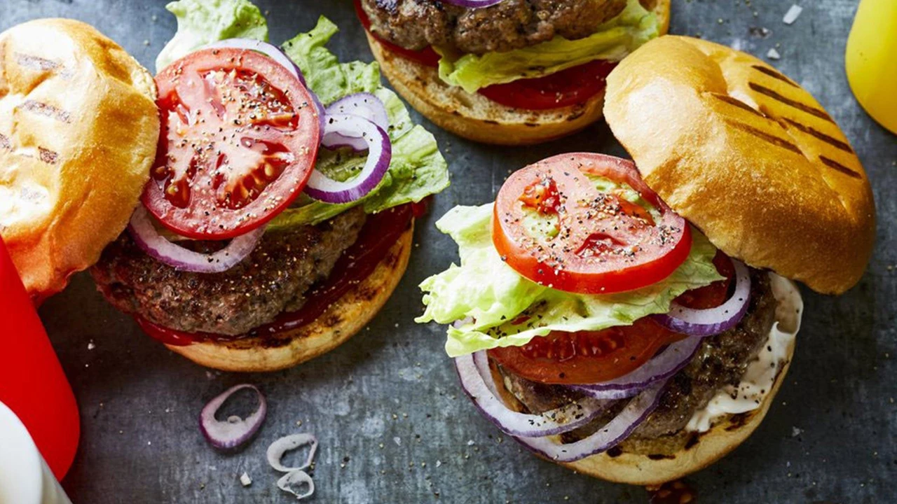

How To MAke The Famous Smoked Bob Burger

Ingredients
- Burger Meat
- Bun
- Tomato
- Lettuce
Directions
- First, set out a large mixing bowl and add in the ground beef, crushed crackers, egg, Worcestershire sauce, milk, and spices.
- Next, press the meat down in the bowl, into an even disk. Use a knife to cut and divide the hamburger patty mixture into 6 - 1/3 pound grill or skillet patties, or 12 thin griddle patties. Like so:
- Then, preheat the grill or a skillet to medium heat, approximately 350-400 degrees F.